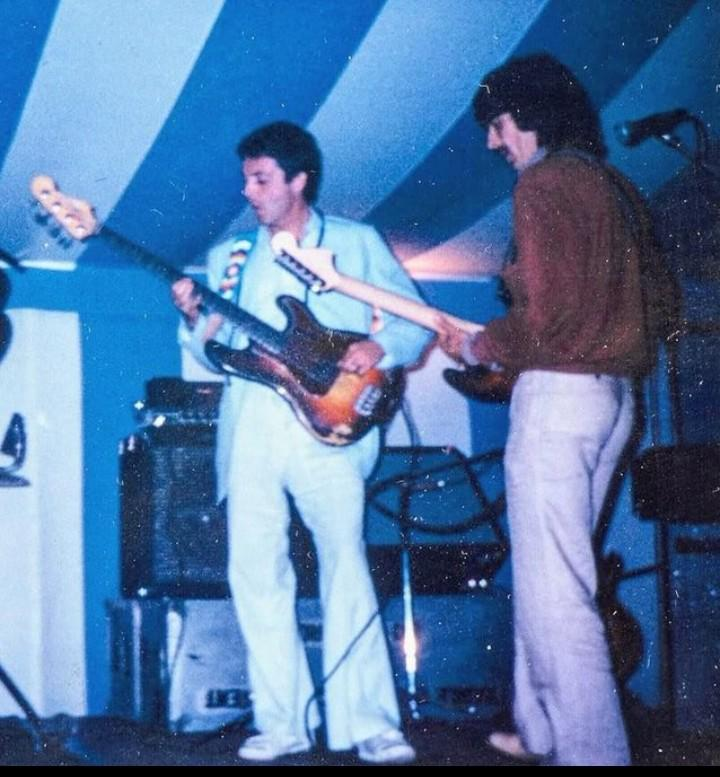
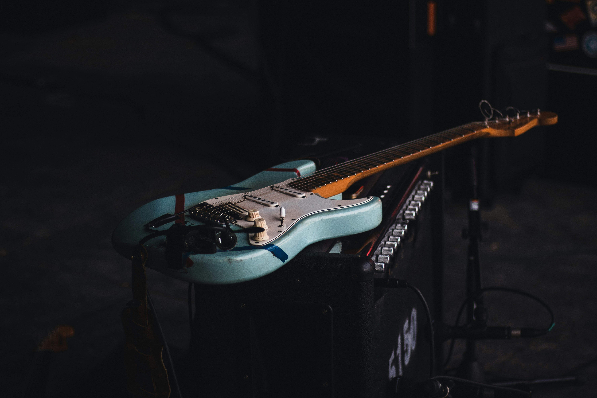

When Eric Swooped In
George realizes really quickly that eric is in love with his wife. It's pretty obvious when to just about everyone. George's first reaction? "Let me set my wife up with my friend." And so, while at a party, he keeps nudging his wife to cheat on him with the other singer, and she does. Ironically so, since George is currently cheatking with Ringo's wife. this leads to the song "Layla" being created, which lets the whole world know about this affair.
George's Response
See, you would think george would be a little upset. He's a big name, the affair is public, and he's about to go through a divorce. His actual response. "He can have her." On live television. So Pattie Boyd and Eric Clapton get married, while George attends the wedding, as all great friends do.
- George Sets Them Up
- Eric writes Layla
- Eric and Pattie Get Married
- George Performs at the Wedding

